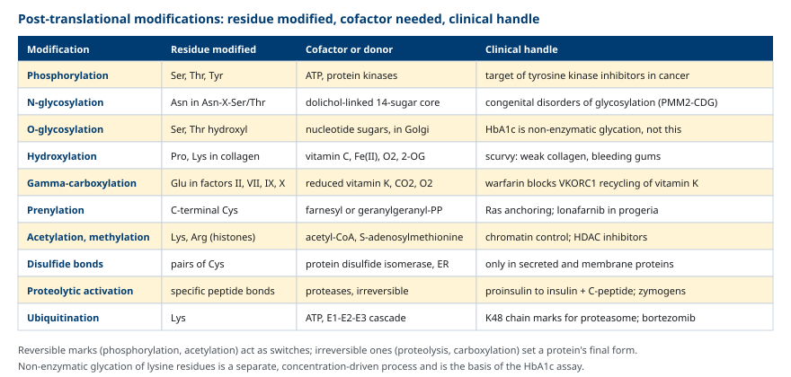
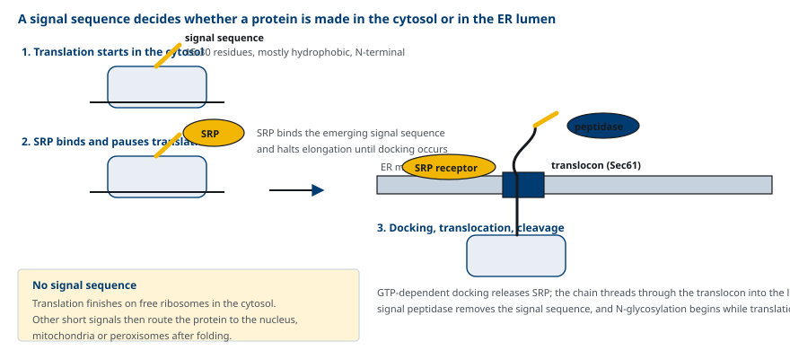
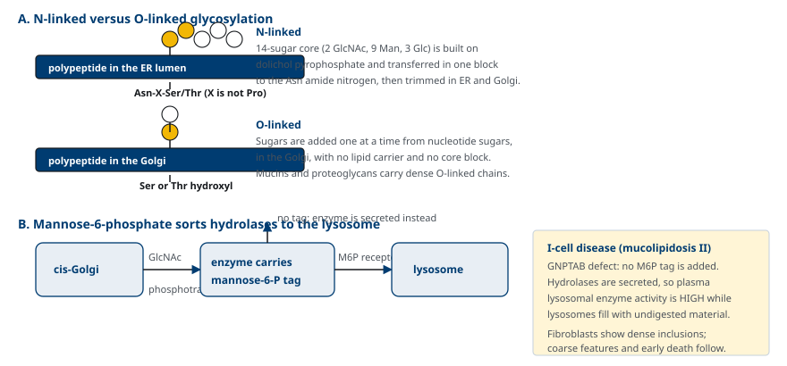
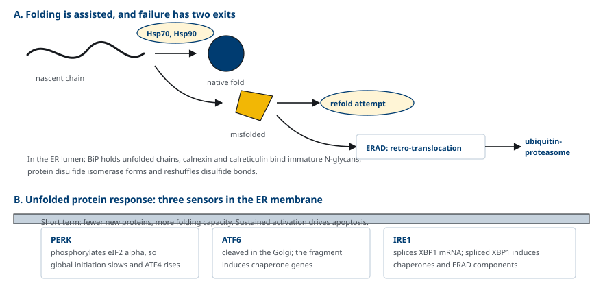
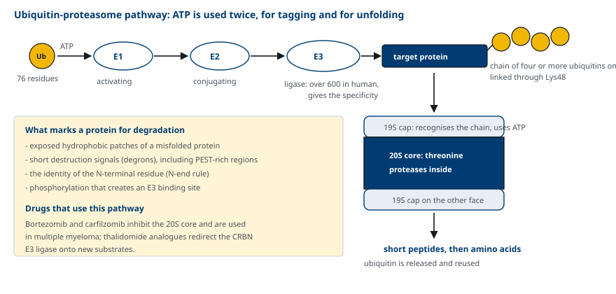
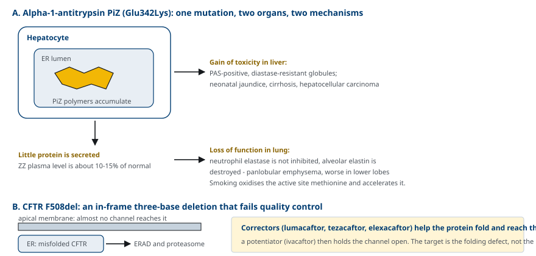

M03-W04-L01 · 분자유전학과 계통별 의학생화학특론
번역 후 수정, 단백질 접힘과 분해
Post-translational Modification, Protein Folding and Degradation
학습목표
- 번역 후 수정을 가역적 수정과 비가역적 수정으로 나누어 분류하고 각각의 생물학적 역할을 설명한다.
- 신호 서열과 signal recognition particle에 의한 ER 표적화 과정을 단계별로 설명한다.
- N-linked와 O-linked glycosylation을 부착 잔기·세포 내 위치·합성 방식으로 비교한다.
- Hydroxylation, γ-carboxylation, prenylation, phosphorylation의 보조인자와 임상적 연결을 설명한다.
- Chaperone과 unfolded protein response가 접힘 품질을 관리하는 방식을 설명한다.
- Ubiquitin-proteasome 경로의 E1-E2-E3 단계와 선택성의 근거를 설명한다.
- α1-antitrypsin 결핍과 cystic fibrosis의 F508del이 접힘 결함으로 질환을 만드는 기전과 치료 전략을 설명한다.
선수지식
- M03-W03-L03 Ribosome과 번역의 단계 — 출구 터널, 공동번역 사건의 개념
- M01-W03-L02 단백질의 3차 구조 — 접힘을 결정하는 힘, 소수성 핵심
- M01-W04-L01 효소의 조절 — 공유결합 변형에 의한 활성 조절
강의 구성
- 1. 번역 후 수정의 정의와 분류
- 2. 신호 서열과 ER 표적화
- 3. Glycosylation과 세포 내 선별
- 4. 그 밖의 공유결합 수정과 보조인자
- 5. 단백질 접힘, chaperone과 소포체 스트레스
- 6. Ubiquitin-proteasome 경로
- 7. 잘못 접힌 단백질과 질환
- 8. 단백질 항상성을 표적으로 하는 치료 전략
1. 번역 후 수정의 정의와 분류
Ribosome에서 나온 polypeptide는 대부분 그대로 기능하지 않는다. 특정 잔기에 화학 기가 붙거나 떨어지고, 일부 peptide 결합이 잘리고, 때로는 다른 사슬과 결합해야 비로소 기능을 갖는다. 이 변화를 번역 후 수정(post-translational modification)이라 한다.
수정의 역할은 네 가지로 묶인다.
- 활성 조절: 효소나 신호 단백질을 켜고 끈다(phosphorylation).
- 위치 지정: 단백질을 특정 세포 구획이나 막으로 보낸다(prenylation, mannose-6-phosphate 표지).
- 구조 완성: 안정한 구조를 만든다(collagen의 hydroxylation, disulfide 결합).
- 수명 결정: 분해 표지가 된다(ubiquitination).
가역성에 따른 구분이 특히 중요하다. 가역적 수정(phosphorylation, acetylation, methylation)은 신호를 전달하는 스위치로 쓰이고, 비가역적 수정(단백질분해에 의한 활성화, γ-carboxylation, hydroxylation)은 단백질의 최종 형태를 정한다. 스위치는 효소 두 개(붙이는 효소와 떼는 효소)로 양방향 조절이 가능하지만, 비가역적 수정이 잘못되면 되돌릴 방법이 없다.

수정과 혼동하기 쉬운 현상이 비효소적 glycation이다. 효소 없이 높은 농도의 glucose가 lysine 잔기의 아미노기와 결합하는 반응으로, 당뇨병에서 HbA1c 측정의 근거가 된다. 효소가 작용하는 glycosylation과 달리 특정 서열을 알아보지 않고 농도와 노출 시간에만 비례한다.
2. 신호 서열과 ER 표적화
수정이 일어나는 장소가 수정의 종류를 정한다. 그래서 단백질이 어디로 가는지가 먼저 결정되어야 한다. 그 결정은 번역이 끝나기 전에 이루어진다.
분비 단백질, 막 단백질, lysosome 효소는 N 말단에 신호 서열(signal sequence)을 가진다. 길이는 15~30개 아미노산이고 소수성 잔기가 많다. 과정은 다음과 같다.
1. 세포질의 자유 ribosome에서 번역이 시작되고, N 말단의 신호 서열이 출구 터널을 나온다. 2. Signal recognition particle(SRP)이 신호 서열에 결합하고 신장을 일시적으로 멈춘다. 3. SRP가 rough ER 막의 SRP receptor에 결합한다. GTP 가수분해와 함께 SRP가 떨어진다. 4. Ribosome이 막의 통로 단백질 복합체(translocon)에 자리 잡고 번역이 재개되어 사슬이 ER 내강으로 들어간다. 5. Signal peptidase가 신호 서열을 잘라낸다. N-glycosylation은 사슬이 들어오는 동안 이미 시작된다.

신호 서열이 없으면 번역이 세포질에서 끝나고, 접힌 뒤에 다른 짧은 표적 서열(핵, 미토콘드리아, peroxisome용)에 따라 운반된다. 따라서 같은 수정 효소를 가진 세포라도 단백질의 목적지가 다르면 받는 수정이 다르다. disulfide 결합이 분비 단백질과 막 단백질에만 흔한 것이 그 예다. 세포질은 환원 환경이고 ER 내강은 산화 환경이기 때문이다.
3. Glycosylation과 세포 내 선별
단백질에 당 사슬을 붙이는 수정이 glycosylation이고, 두 가지 방식이 있다. 붙는 잔기와 일어나는 장소가 다르다.
| 항목 | N-linked | O-linked |
|---|---|---|
| 붙는 자리 | Asn의 아미드 질소, 서열은 Asn-X-Ser/Thr (X는 Pro 제외) | Ser 또는 Thr의 hydroxyl기 |
| 장소 | ER 내강에서 시작, Golgi에서 가공 | 주로 Golgi |
| 합성 방식 | 당 14개의 core를 dolichol pyrophosphate 위에서 미리 만들어 한 번에 옮긴다 | 뉴클레오타이드 당에서 한 개씩 차례로 붙인다 |
| 대표 산물 | 대부분의 분비·막 단백질, 면역글로불린 | mucin, proteoglycan, collagen의 일부 |
N-linked의 core는 GlcNAc 2개, mannose 9개, glucose 3개로 이루어지고, oligosaccharyltransferase가 통째로 옮긴다. 옮긴 뒤 ER과 Golgi에서 당을 떼고 붙이는 가공을 거쳐 최종 구조가 결정된다.

당 사슬의 기능은 세 가지다. 단백질의 용해도와 안정성을 높이고, 세포 간 인식과 수용체 결합에 참여하며, 세포 내 선별의 주소로 쓰인다. 세 번째가 임상적으로 중요하다. Lysosome 효소는 cis-Golgi에서 mannose 잔기에 인산이 붙어 mannose-6-phosphate 표지를 받고, 이 표지를 인식하는 수용체에 의해 lysosome으로 보내진다.
4. 그 밖의 공유결합 수정과 보조인자
수정마다 필요한 보조인자가 다르고, 그 보조인자의 결핍이나 약물에 의한 차단이 곧 질환이나 치료가 된다.
Hydroxylation Collagen 전구체의 proline과 lysine에 hydroxyl기를 붙이는 반응이다. prolyl hydroxylase와 lysyl hydroxylase는 vitamin C(ascorbate), Fe²⁺, α-ketoglutarate, O₂를 필요로 한다. Hydroxyproline은 삼중나선 사이의 수소결합에 쓰이고, hydroxylysine은 당 부착과 교차결합의 자리가 된다. Vitamin C가 부족하면(scurvy) hydroxylation이 줄어 삼중나선이 불안정해지고, 잇몸 출혈, 상처 치유 지연, 혈관 취약성이 나타난다.
γ-Carboxylation 응고인자 II, VII, IX, X과 protein C, protein S의 N 말단 쪽 glutamate에 carboxyl기를 하나 더 붙여 γ-carboxyglutamate(Gla)를 만든다. Gla 잔기 두 개가 Ca²⁺ 하나를 붙잡아 인지질 막에 결합하게 하므로, 이 수정이 없으면 응고인자가 만들어져도 막 위에서 작동하지 못한다. 반응에는 환원형 vitamin K가 필요하고, 산화된 vitamin K는 VKORC1이 환원해 재사용한다. Warfarin은 VKORC1을 억제해 환원형 vitamin K를 고갈시킨다.
Prenylation C 말단의 cysteine에 farnesyl(C15)이나 geranylgeranyl(C20)기를 붙여 단백질을 막에 고정한다. Ras 계열 단백질이 막에서 작동하는 데 필요하다. 이 isoprenoid는 cholesterol 합성 경로의 mevalonate에서 나오므로, statin이 mevalonate 경로를 억제하면 prenylation도 함께 줄어든다. Statin의 cholesterol 외 작용과 일부 부작용이 이 지점에서 설명된다.
Phosphorylation Serine, threonine, tyrosine의 hydroxyl기에 ATP의 인산을 옮긴다. 사람 단백질의 상당 부분이 적어도 한 번 인산화되며, kinase와 phosphatase의 균형이 활성을 정한다. 종양에서 kinase가 과활성화되는 사례가 많아 kinase 억제제가 주요 항암제 계열이 되었다.
Acetylation과 methylation Lysine의 ε-아미노기에 acetyl-CoA의 acetyl기가, lysine과 arginine에 S-adenosylmethionine의 methyl기가 붙는다. Histone의 이 수정이 chromatin 구조를 바꾸므로 다음 수업의 유전자 발현 조절과 직접 이어진다.
단백질분해에 의한 활성화 일부 peptide 결합을 자르는 비가역적 수정이다. Proinsulin에서 C-peptide가 떨어져 insulin이 되고, 소화효소와 응고인자는 zymogen 상태로 만들어져 필요한 자리에서만 잘려 활성화된다. C-peptide를 측정하면 내인성 insulin 분비량을 알 수 있는 근거가 여기에 있다.
5. 단백질 접힘, chaperone과 소포체 스트레스
아미노산 서열은 접힘의 정보를 담고 있지만, 세포 안의 높은 단백질 농도에서 사슬이 혼자 올바르게 접히기는 어렵다. 노출된 소수성 부위가 다른 사슬과 엉길 수 있기 때문이다. 이를 막는 단백질이 chaperone이다.
- 세포질: Hsp70 계열이 신생 사슬의 소수성 부위를 가려 주고, Hsp90이 신호 단백질과 수용체의 성숙을 돕는다. ATP를 쓰며 결합과 해리를 반복한다.
- ER 내강: BiP가 접히지 않은 사슬을 붙잡고, calnexin과 calreticulin이 미성숙 N-glycan을 인식해 접힘이 끝날 때까지 붙잡아 둔다. Protein disulfide isomerase가 disulfide 결합을 만들고 잘못 짝지어진 결합을 바꾼다.
품질 관리는 두 갈래의 출구를 갖는다. 다시 접도록 돕거나, 포기하고 분해로 보낸다. 후자가 ERAD(ER-associated degradation)로, 잘못 접힌 단백질을 세포질로 되돌려 ubiquitin을 붙여 proteasome으로 보낸다.
잘못 접힌 단백질이 ER에 쌓이면 unfolded protein response(UPR)가 작동한다. 세 가지 감지 경로가 있다.
- PERK: eIF2의 α 소단위를 인산화해 번역 개시를 전반적으로 줄인다. 들어오는 사슬의 양을 줄이는 조치다.
- ATF6: Golgi에서 절단되어 생긴 조각이 chaperone 유전자의 전사를 올린다.
- IRE1: XBP1 mRNA를 splicing해 전사인자를 만들고, chaperone과 ERAD 구성 요소를 늘린다.

단기적으로는 보호 반응이지만 지속되면 apoptosis로 이어진다. 분비 부담이 큰 세포(췌장 β세포, 형질세포, 간세포)에서 이 균형이 특히 중요하다.
6. Ubiquitin-proteasome 경로
단백질의 양은 합성과 분해의 균형으로 정해진다. 세포질과 핵에서 선택적 분해를 담당하는 체계가 ubiquitin-proteasome 경로다. 수명이 짧은 조절 단백질, 잘못 접힌 단백질, 손상된 단백질이 이 경로로 제거된다.
Ubiquitin은 76개 아미노산의 작은 단백질이고, 표적 단백질의 lysine에 결합한다. 세 종류의 효소가 차례로 작용한다.
1. E1(활성화 효소): ATP를 써서 ubiquitin을 활성화한다. 2. E2(결합 효소): 활성화된 ubiquitin을 받는다. 3. E3(ligase): 표적 단백질을 인식해 ubiquitin을 옮겨 붙인다. 사람에는 600종 이상의 E3가 있고, 선택성은 전적으로 E3가 정한다.
Lysine 48을 통해 연결된 ubiquitin이 네 개 이상 이어지면 분해 표지가 된다. 다른 연결(Lys63 등)은 분해가 아니라 신호 전달과 수선에 쓰인다. 같은 표지 분자가 연결 방식에 따라 다른 뜻을 가진다.

26S proteasome은 통 모양의 20S 촉매 중심과 양쪽의 19S 조절 뚜껑으로 이루어진다. 19S가 ubiquitin 사슬을 인식하고 ATP를 써서 표적을 풀어 통 안으로 밀어 넣으며, 20S 내부의 단백분해효소가 짧은 peptide로 자른다. Ubiquitin은 떨어져 재사용된다.
어떤 단백질이 표적이 되는지는 여러 신호로 정해진다. 잘못 접혀 노출된 소수성 부위, 짧은 분해 신호 서열(degron, PEST 서열), N 말단 잔기의 종류(N-end rule), 그리고 E3 결합 부위를 만드는 인산화가 그 예다. 세포주기 조절 단백질이 정해진 시점에 사라지는 것도 이 경로의 작용이다.
7. 잘못 접힌 단백질과 질환
접힘 결함이 질환을 만드는 방식은 두 가지다. 기능 상실(제자리에 도달하지 못함)과 독성 획득(쌓인 단백질 자체가 세포를 손상)이다. 두 기전이 한 질환에서 함께 나타나는 대표적인 예가 α1-antitrypsin 결핍이다.
α1-Antitrypsin 결핍 α1-Antitrypsin은 간에서 만들어 혈액으로 분비되는 단백분해효소 억제제로, 폐에서 호중구의 elastase를 억제해 탄성섬유를 보호한다. *SERPINA1*의 정상 대립유전자는 PiM이고, PiZ(Glu342Lys) 변이는 단백질이 ER 내에서 서로 중합되게 만든다.
- 간: 중합체가 간세포 ER에 쌓인다. 조직에서 PAS 양성, diastase 저항성 구상체로 보인다. 신생아 황달, 소아·성인 간경변, 간세포암의 위험이 올라간다. 독성 획득 기전이다.
- 폐: 분비량이 줄어 혈중 농도가 정상의 10~15% 수준으로 떨어진다. Elastase가 억제되지 않아 폐 하부에 우세한 전엽성 폐기종이 40대 전후에 생긴다. 기능 상실 기전이다.
- 흡연은 활성 부위의 methionine을 산화시켜 억제 능력을 더 떨어뜨리므로, 금연이 가장 중요한 치료다.

Cystic fibrosis의 F508del *CFTR*의 가장 흔한 변이로, 3 염기가 빠진 in-frame 결손이다. Phenylalanine 508 하나가 없어진 단백질은 만들어지기는 하지만 접히지 못해 ERAD로 분해되어 세포 표면에 거의 도달하지 못한다. 염소 이온 수송이 되지 않아 기도 점액이 끈끈해지고, 췌장 외분비 기능이 떨어지며, 땀의 염화물 농도가 높아진다(진단에 쓰이는 땀 검사의 근거).
변이의 종류에 따라 결함의 성격이 다르다는 점이 치료 선택의 기준이 된다.
| CFTR 변이 유형 | 결함 | 접근 |
|---|---|---|
| F508del 등 접힘 결함 | 표면에 도달하지 못함 | corrector로 접힘·운반을 돕는다 |
| G551D 등 개폐 결함 | 표면에 있으나 열리지 않음 | potentiator로 통로를 열어 둔다 |
| Nonsense 변이 | 단백질이 만들어지지 않음 | readthrough·유전자 치료 전략 |
Corrector(lumacaftor, tezacaftor, elexacaftor)와 potentiator(ivacaftor)의 병용은 F508del을 하나 이상 가진 환자에서 폐기능과 땀 염화물 농도를 개선한다. DNA를 고치지 않고 접힘 결함 자체를 표적으로 하는 치료라는 점에서 이 수업의 내용이 직접 치료로 이어지는 예다.
8. 단백질 항상성을 표적으로 하는 치료 전략
접힘과 분해를 다루는 체계를 통틀어 단백질 항상성(proteostasis)이라 한다. 치료 전략은 이 체계의 어느 지점에 개입하는지로 분류된다.
| 전략 | 개입 지점 | 예 |
|---|---|---|
| 접힘 보조(pharmacologic chaperone) | 변이 단백질의 접힘 | Migalastat(Fabry disease의 적합 변이), CFTR corrector |
| 분해 촉진 | E3 ligase의 기질 선택 | Lenalidomide 계열, 표적 단백질 분해 약물 |
| 분해 억제 | Proteasome | Bortezomib, carfilzomib |
| 기질 감소 | 쌓이는 물질의 생산 | Eliglustat, miglustat(Gaucher disease) |
| 효소 보충 | 결핍된 효소 자체 | 각종 lysosome 질환의 효소 보충 치료 |
| 단백질 보충 | 부족한 분비 단백질 | α1-Antitrypsin 보충 요법(주 1회 정맥) |
| 응집 억제·안정화 | 잘못 접힌 단백질의 중합 | Tafamidis(transthyretin 사량체 안정화) |
이 표를 읽는 방법이 중요하다. 같은 유전자의 변이라도 결함의 성격(합성되지 않음, 접히지 않음, 기능하지 않음, 쌓여서 해롭다)에 따라 쓸 수 있는 전략이 달라진다. α1-Antitrypsin 결핍에서 보충 요법은 폐의 기능 상실을 보완하지만 간에 쌓인 중합체는 줄이지 못한다. 반대로 간 질환에는 중합을 막는 접근이 필요하다. 한 질환에 두 기전이 있으면 치료도 두 갈래로 나뉜다.
확인 문항
분비 단백질에는 disulfide 결합이 흔하지만 세포질 단백질에는 드물다. 이유를 설명하라.
해설
Disulfide 결합은 두 cysteine의 thiol기가 산화되어 형성되므로 산화 환경이 필요하다. ER 내강은 산화 환경이고 protein disulfide isomerase가 결합 형성과 재배열을 촉매한다. 반면 세포질은 glutathione과 thioredoxin 체계에 의해 강하게 환원된 상태로 유지되므로 disulfide 결합이 생기더라도 곧 환원된다. 따라서 단백질이 어떤 수정을 받는지는 아미노산 서열만이 아니라 신호 서열이 지정한 목적지의 화학적 환경에 의해서도 결정된다.
I-cell disease 환자에서 혈중 lysosome 효소 활성이 정상보다 높게 측정된다. 이 역설적 소견의 기전과, 효소 결핍 질환과의 차이를 설명하라.
해설
결함은 효소 자체가 아니라 효소에 붙는 주소 표지에 있다. GlcNAc phosphotransferase(GNPTAB)가 작동하지 않아 lysosome 효소에 mannose-6-phosphate 표지가 붙지 않고, 표지가 없는 효소는 수용체에 인식되지 못해 lysosome으로 가지 못하고 세포 밖으로 분비된다. 그래서 혈중 활성은 오히려 높고 세포 내 lysosome에는 분해되지 않은 기질이 쌓인다. 단일 효소 결핍 질환에서는 해당 효소 활성이 혈액과 세포에서 모두 낮으므로, 측정 결과의 방향으로 두 기전을 구분할 수 있다.
Warfarin을 투여하면 응고 효과가 즉시 나타나지 않고 36~72시간이 걸린다. 번역 후 수정의 관점에서 설명하라.
해설
Warfarin은 VKORC1을 억제해 산화된 vitamin K의 환원을 막고, 환원형 vitamin K가 고갈되면 γ-glutamyl carboxylase가 새 응고인자에 γ-carboxylation을 수행할 수 없다. 그러나 이미 carboxylation이 끝나 순환하는 응고인자에는 영향을 주지 못하므로, 효과는 기존 인자가 반감기에 따라 소실되는 속도만큼만 나타난다. 반감기가 가장 짧은 factor VII부터 줄어들어 prothrombin time이 먼저 늘고, 반감기가 긴 prothrombin까지 줄어드는 데 수일이 걸린다. 같은 이유로 반감기가 짧은 protein C가 먼저 감소해 투여 초기에 일시적 혈전 경향이 생길 수 있어 heparin을 겹쳐 쓴다.
Statin이 cholesterol 합성 외에 prenylation에도 영향을 주는 이유를 경로로 설명하라.
해설
Prenylation에 쓰이는 farnesyl pyrophosphate와 geranylgeranyl pyrophosphate는 mevalonate에서 시작되는 isoprenoid 경로의 중간체다. Statin은 이 경로의 입구인 HMG-CoA reductase를 억제하므로 mevalonate 공급이 줄고, cholesterol뿐 아니라 isoprenoid 공급도 함께 줄어든다. 그 결과 Ras와 Rho 계열 단백질의 막 고정이 감소하고, 이것이 statin의 지질 저하 외 작용과 근육 증상 같은 일부 부작용의 설명으로 제시된다.
다발골수종에서 proteasome 억제제가 정상 세포보다 종양 세포에 더 큰 영향을 주는 이유를 설명하라.
해설
형질세포에서 유래한 골수종 세포는 면역글로불린을 대량으로 합성·분비하므로 ER에서 접히지 못한 단백질이 끊임없이 생기고, 그것을 ERAD와 ubiquitin-proteasome 경로로 제거하는 데 크게 의존한다. Proteasome을 억제하면 잘못 접힌 단백질이 축적되어 unfolded protein response가 지속적으로 활성화되고, 결국 세포사가 유도된다. 분비 부담이 낮은 정상 세포는 같은 억제 수준에서도 축적 속도가 느려 상대적으로 견딜 수 있다. 즉 선택성이 약물의 표적 차이가 아니라 세포의 처리 부담 차이에서 나온다.
α1-Antitrypsin PiZ 동형접합 환자에서 폐 질환과 간 질환의 기전이 서로 다르다. 각각을 설명하고 보충 요법이 어느 쪽에만 효과가 있는지 답하라.
해설
폐 질환은 기능 상실 기전이다. 중합체가 간세포 ER에 갇혀 분비가 줄고 혈중 농도가 정상의 10~15% 수준으로 떨어지므로, 폐에서 호중구 elastase가 억제되지 않아 탄성섬유가 파괴되어 하부 우세 전엽성 폐기종이 생긴다. 간 질환은 독성 획득 기전이다. ER에 쌓인 중합체 자체가 간세포를 손상시켜 신생아 황달, 간경변, 간세포암으로 이어진다. 보충 요법은 혈중 α1-antitrypsin 농도를 올려 폐의 기능 상실을 보완할 뿐이고, 간세포 안에 쌓인 중합체를 줄이지 못하므로 간 질환에는 효과가 없다. 간 질환의 근본 치료는 간이식이다.
CFTR의 F508del 변이에는 corrector가 필요하고 G551D 변이에는 potentiator가 효과적이다. 두 변이의 결함 성격 차이로 설명하라.
해설
F508del은 3 염기 in-frame 결손으로 단백질이 만들어지기는 하나 접히지 못하고 ERAD에 의해 분해되어 세포 표면에 거의 도달하지 못한다. 즉 결함은 접힘과 운반에 있으므로, 접힘을 돕고 표면 도달량을 늘리는 corrector가 필요하다. G551D는 단백질이 정상적으로 표면에 도달하지만 통로의 개폐가 되지 않는 기능 결함이므로, 통로가 열린 상태를 유지하도록 돕는 potentiator가 직접 효과를 낸다. F508del 치료에서는 표면에 도달시킨 뒤 열어 주는 두 작용이 모두 필요하므로 corrector와 potentiator를 병용한다.
어떤 단백질이 ubiquitin-proteasome 경로의 표적으로 선택되는지는 무엇이 결정하는가. 선택성이 E3에 있다는 사실의 치료적 의미를 함께 적으라.
해설
E1은 ubiquitin을 활성화하고 E2는 그것을 받아 운반할 뿐 표적을 가리지 않는다. 표적 단백질을 직접 인식해 결합하는 것은 E3 ligase이며, 사람에는 600종 이상의 E3가 있어 각각 서로 다른 기질군을 담당한다. 표적이 되는 신호로는 노출된 소수성 부위, degron이나 PEST 서열, N 말단 잔기의 종류, E3 결합 부위를 만드는 인산화가 있다. 치료적 의미는 E3의 기질 인식을 바꾸면 분해 대상을 바꿀 수 있다는 점이다. Thalidomide 유도체가 cereblon에 결합해 평소 분해되지 않는 전사인자를 분해로 보내는 작용이 그 예이고, 이것이 특정 단백질을 겨냥한 분해 유도 약물 설계의 출발점이 되었다.
참고문헌
- Ferrier DR (ed). Lippincott Illustrated Reviews: Biochemistry. Chapter 32, Protein Synthesis.
- Walter P, Ron D. The unfolded protein response: from stress pathway to homeostatic regulation. Science 2011;334:1081–1086.
- Balch WE, Morimoto RI, Dillin A, Kelly JW. Adapting proteostasis for disease intervention. Science 2008;319:916–919.
- Hershko A, Ciechanover A. The ubiquitin system. Annu Rev Biochem 1998;67:425–479.
- Greene CM et al. α1-Antitrypsin deficiency. Nat Rev Dis Primers 2016;2:16051.
- Middleton PG et al. Elexacaftor-tezacaftor-ivacaftor for cystic fibrosis with a single Phe508del allele. N Engl J Med 2019;381:1809–1819.
- Kornfeld S, Sly WS. I-cell disease and pseudo-Hurler polydystrophy: disorders of lysosomal enzyme phosphorylation and localization. In: The Metabolic and Molecular Bases of Inherited Disease. McGraw-Hill.